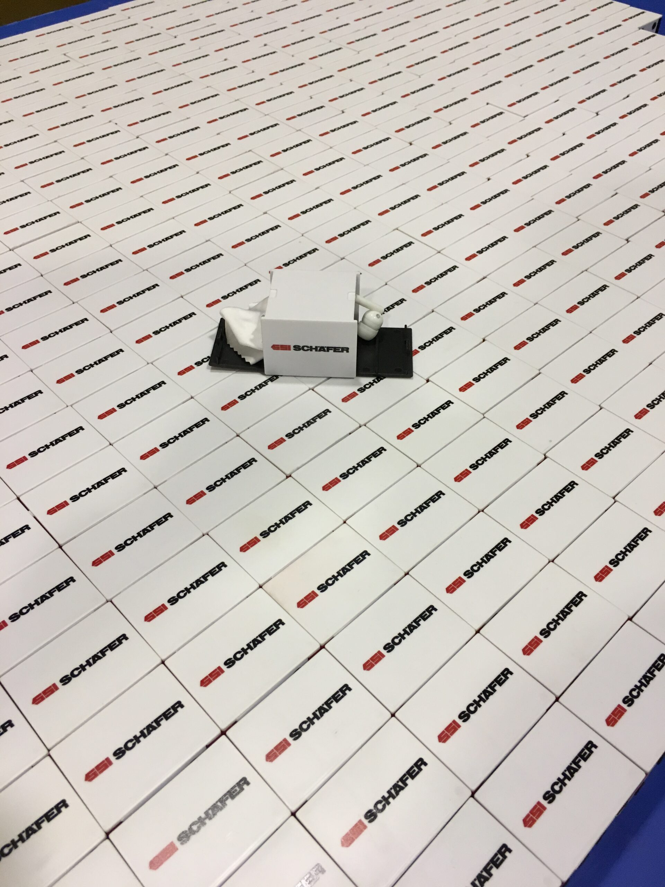
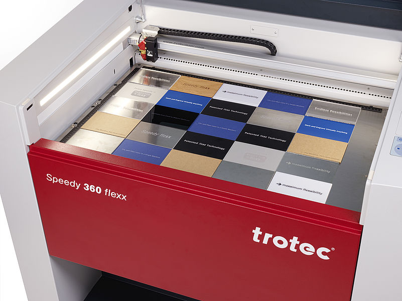
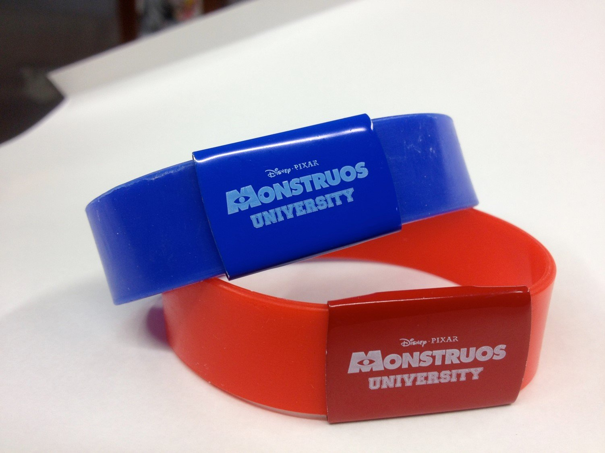
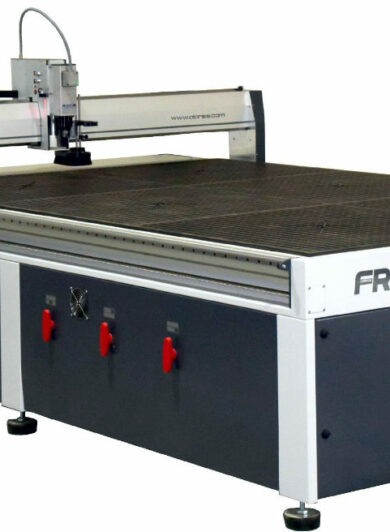
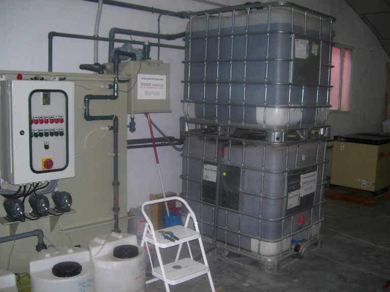

Más de 30 años marcando en el mismo polígono
En Alboraya, a un paso de los polígonos industriales de Valencia. Tres décadas de oficio convertidas en algo que el comprador industrial valora por encima del precio: que la marca salga bien la primera vez y salga idéntica la número diez mil.
Oficio de taller, convertido en control de proceso
No somos una imprenta que estampa lo que llega. Somos un taller que decide qué técnica aguanta tu pieza, tu tinta y tu proceso —y lo documenta para poder repetirlo.
Treinta años trabajando metal, plástico técnico, vidrio, textil y metacrilato dan algo que no se improvisa: criterio para elegir entre doce técnicas la que resiste tu lavado, tu intemperie o tu manipulación. Y una ficha de proceso archivada por trabajo que convierte cada reposición en una copia exacta de la primera.

Doce técnicas bajo un mismo techo, sin subcontratar
Tener las máquinas dentro significa control del plazo, del color y de la calidad —y un solo interlocutor de principio a fin.




Lo que podemos demostrar, te lo demostramos
Tratamos el agua del proceso en circuito cerrado, sin vertido directo, y gestionamos residuos peligrosos por gestor autorizado. El papel, el cartón y el plástico se reciclan con nuestro partner RECICLAMAS.
No publicamos sellos que no tengamos. Cuando una certificación esté emitida, la verás aquí con su número —no antes.
Ven a ver tu pieza sobre la mesa del taller
Camino del Mar 36 · 46120 Alboraya · Valencia+34 96 186 02 75 · info@serigrafiaduato.es